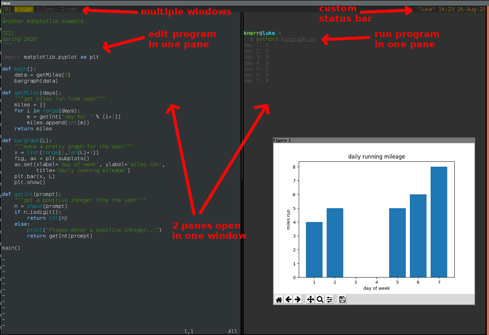

Tmux is a terminal-multiplexer
basically DWM inside the terminal.

You can open many shells inside one terminal
When you close the terminal the sission persists.
You can have many sessions and attach to them.
I use this to delegate long running tasks like unit-tests.